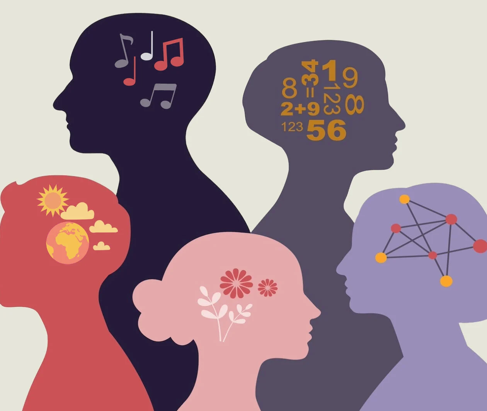

NeuroAssist
STAY FOCUSED STAY PRODUCTIVE
Neurodiversity recognizes and values the natural variations in human brain function, including conditions like autism, ADHD, dyslexia, and more. It emphasizes that neurological differences are not deficits but unique strengths that contribute to society in diverse ways. Embracing neurodiversity fosters inclusion, innovation, and a deeper understanding of individual potential. By promoting acceptance and support, we create environments where everyone can thrive.